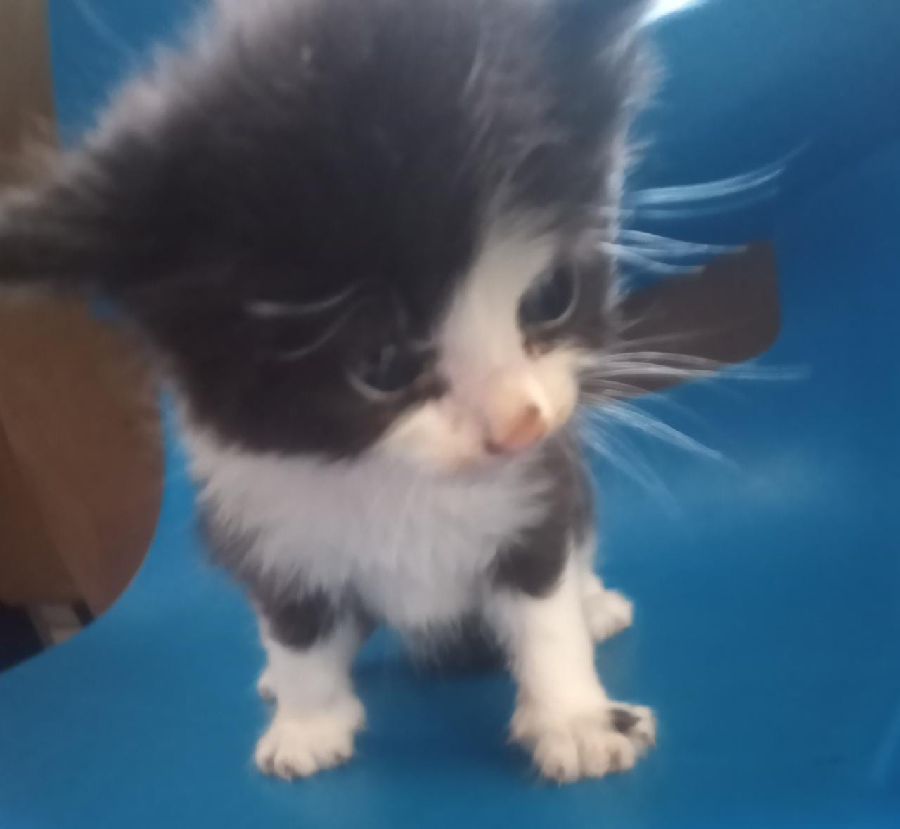

Doe seu Lar,
adote um gatinho super poderoso!
- Fofuxos, voluntariosos e brincalhões
- Capazes de derreter o coração mais empedernido.
- Fazem bem à saúde, à autoestima, a tudo.
-

Rukia💗
Idade:30 dias
Genero:Fêmea
Poder:Proteção do mal
Tipo:Deusa TrÃplice
ATK:Afasta quem deseja o mal
DEF:Proteção do Lar e famÃlia
Origem:Soul Society
Clã: Shinigami
-

Inoue💗
Idade:30 dias
Genero:Fêmea
Poder:Amizade
Tipo:Resiliência
ATK:Sabedoria
DEF:Compreenção
Origem:Karakura
Clã:N/A
-

Sakura💗
Idade:30 dias
Genero:Fêmea
Poder:Cura
Tipo:Energia da Lua
ATK:Purificador de energia
DEF:Aliviam o stress e a tensão
Origem:Aldeia de Konoha
Clã:Uchiha/Haruno
-

Goku💙
Idade:30 dias
Genero:Macho
Poder:Ativo e criador
Tipo:Energia do Sol
ATK:Sorte e Prosperidade
DEF:Foco definido na vida
Origem:Planeta Vegeta
Clã:Saiyajins
O Adote Aqui🱠busca lares para gatos encontrados abandonados e também trabalha para conscientizar as pessoas sobre a importância da castração e posse responsável.